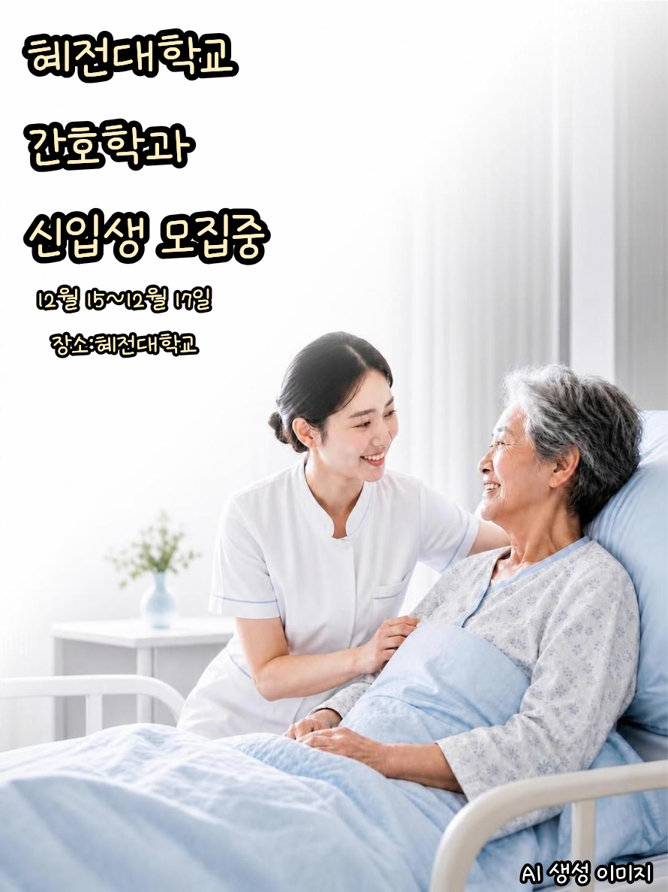
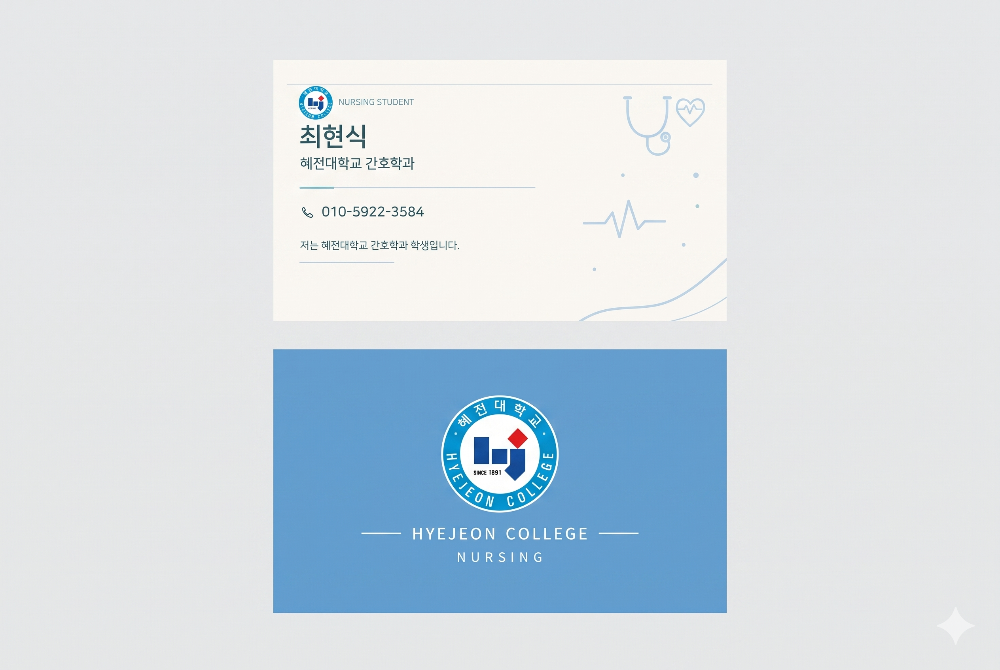

6주차, ChatGPT, 미리캔버스
간호학과 홍보 포스터
혜전대학교 간호학과 신입생 모집 안내 홍보 포스터
이해와 소통으로 미래 간호를 그리는 예비 간호사입니다.
이름: 최현식
학과: 간호학과
이번 학기 느낀 점:
'AI의 창의적 활용' 교양 수업을 통해 다양한 AI 도구들을 직접 경험하고 활용해 보았습니다. 배움의 과정이 즐겁고 행복했으며, 유익한 시간이었습니다. 앞으로도 이 수업이 오래도록 기억에 남을 것 같습니다.

혜전대학교 간호학과 신입생 모집 안내 홍보 포스터

혜전대학교 간호학과 예비 간호사 브랜딩 명함 디자인
종아리 붓기와 통증 등 심부정맥혈전증(DVT)의 위험 신호와 대처법을 알리는 건강 정보 숏폼 영상
심정지 환자 발견 시 반응 확인부터 가슴압박, 자동심장충격기(AED) 사용법까지 정리한 오디오 콘텐츠